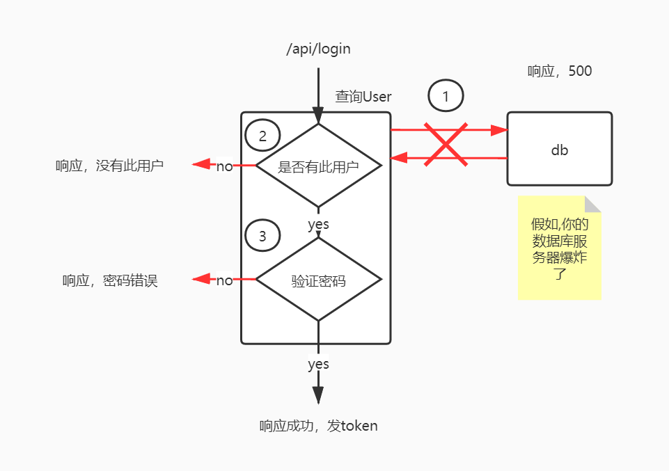
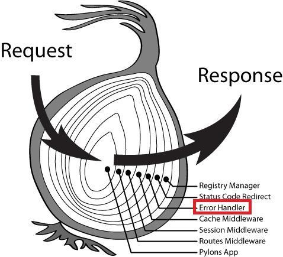

[eggjs]异常捕获中间件，一下子理解koa洋葱圈模型
开始看 koa 的时候有一个洋葱圈模型的概念，一直没弄明白。直到我在跟着 egg 文档写异常捕获的时候，突然明白了咋回事。
egg 的文档提有超详细的教程，手把手带你写一个后台服务 这里：https://eggjs.org/zh-cn/intro/quickstart.html
统一的异常处理
在开发服务时，会遇到很多异常和错误，比如数据库报错这种异常，比如密码错误这种业务相关的错误。那当遇到错误时，就不需要执行后面的逻辑，直接响应一个错误给客户端。
拿登录接口举个例子

① 第一步数据库操作，可能我们需要 catch 到错误，完后结束掉请求try {
//doSomething ...你的数据库操作
} catch (e) {
//啊 出错了，进行不下去了
this.ctx.status = 500;
this.ctx.body = '写点啥';
}
② 第二步，数据库是健康的，我得拿着 Uname 去请求 User 数据了
async getUserByUname(uname){
const result = await model.user.getUserByUname(uname) //执行sql语句
//没有数据？那得返回：没有此用户
if(result.length===0){
//查询不到，更别提密码了
this.ctx.body='没有此用户'
}
//。。。你之后的逻辑
}
③ 第三步，我都不想写了，已经很乱了，每个错误都要在 controller 文件或者 service 文件中响应一个错误原因 message，找都找不到
试试把错误统一管理
//errorHandler中间件
export default () => {
return async function errorHandler(ctx, next) {
try {
await next()
} catch (err) {
const status = err?.status || 500
// 不知道是啥的异常记录日志
status === 500 && ctx.app.emit('error', err, ctx);
const error = status === 500 && ctx.app.config.env === 'prod'
? 'Internal Server Error'
: err.message
const msg = status > 600 ? CST_ERR_CODE[status] : error
ctx.body = await ctx.service.response.format(status || 500, null, msg)
}
};
};
//自定义错误
export class CustError extends Error {
status: number
constructor(status: number, message?: string) {
super()
this.status = status
if (message) {
this.message = message
}
}
}
//错误代码
export enum CST_ERR_CODE {
// 10001-登录-密码错误
Login_WrongPass = 10001,
// 10002-登录-没有此用户
Login_NoUser = 10002,
// 10003-登录-验证失败
Login_VerificationFail = 10003,
// 10004-注册-重复的用户名
Regist_SameUname = 10004,
// 10005-注册-注册失败
Regist_Wrong = 10005
}
1.使用 errorHandler 中间件包裹猪我们的代码，在我们的代码抛出异常时，在 errorHandler 里统一 catch 错误，并响应错误 2.自定义的错误对象，在判断出登录错误问题时，直接throw new CustError(CST_ERR_CODE.Login_WrongPass) 3.定义错误代码
洋葱圈模型
那为什么我们可以这么干，我想起了我以前看到的洋葱圈模型的图片

最内部是 APP，外面是一层一层的 koa 中间件，在每个中间件中 next()执行内部的代码 上面解释的是 ErrorHandler 中间件的作用，当内部洋葱 throw 出错误时，使用 ErrorHandler 中间件 catch 到错误结束掉本次请求 是不是明白这个大葱头的图片是啥意思了 😀然后需要注意的是，你这一堆 function 一定要组成一个 async await 异步链，才能 catch 住